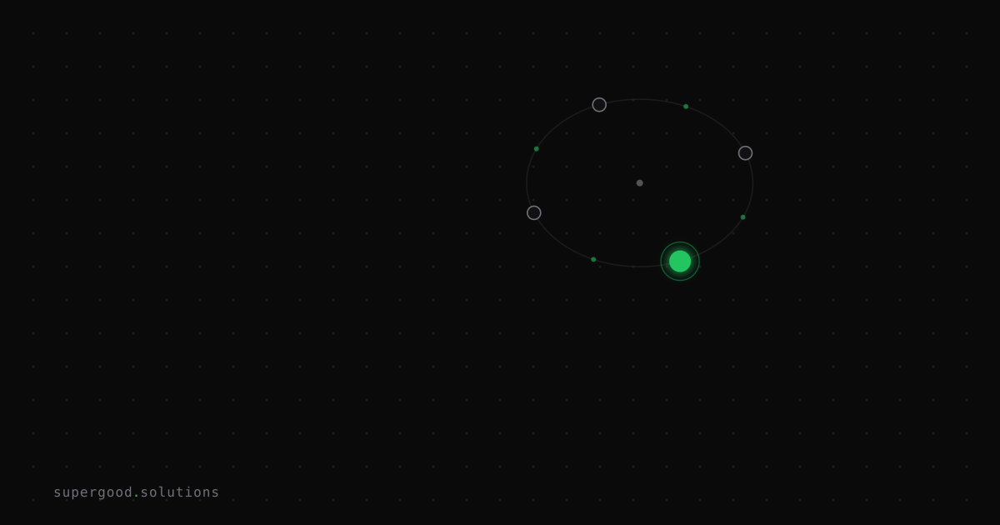

AI Framework Debt Hits Faster Than React Native Did
TL;DR: Shopify just spent 12 weeks rebuilding its Shop app from React Native into separate Swift and Kotlin codebases — a reversal of a bet it made nearly a decade ago. Teams that locked their AI stack into a single orchestration framework in 2023-2024 are sitting on the same kind of debt, except the replacement cycle isn't measured in years anymore. It's measured in quarters.
Key Insight
The React Native pitch was "write once, run everywhere" — one team, one codebase, two platforms. Shopify's engineering team reversed that decision in September 2026, moving the Shop app to native Swift and Kotlin and explicitly crediting AI coding agents for making "build it twice" affordable again. When a cross-platform abstraction stops being cheaper than two native implementations, teams drop it.
The same math is happening one layer down the stack, faster. Early AI orchestration frameworks — LangChain chief among them — sold the same promise: one abstraction layer over multiple model providers, one mental model for chains, agents, and memory. But LangChain shipped three years of breaking v0.x changes before reaching a stable 1.0 in late 2025, and by early 2026 production teams were already migrating out to raw provider SDKs (OpenAI's Agents SDK, Anthropic's Claude Agent SDK) or hand-rolled orchestration. The framework's core value — hiding the differences between providers — eroded the moment providers started shipping native tool-calling, structured outputs, and agent loops themselves.
React Native took roughly eight years to go from "obvious default" to "worth tearing out." LangChain took about three. The pattern is the same; the clock is compressed, because model providers ship new primitives on a quarterly cadence, not an annual one.
Why Teams Miss This
Teams treat "pick a framework" as a one-time architecture decision instead of a recurring maintenance line item. The framework gets adopted during a prototype phase when speed matters most, then it quietly becomes load-bearing: prompts, retries, memory, and tool definitions all get expressed in the framework's vocabulary instead of the provider's. Nobody budgets for the rewrite because nobody scheduled one — it only becomes visible once debugging opacity, versioning brittleness, or a provider feature the framework can't expose starts costing more than switching would.
The failure isn't choosing a framework. It's choosing one without a planned expiration date, the same way Shopify didn't plan to keep React Native as a fixed cross-platform layer forever — the bet made sense until the cost of a second native build fell below the cost of maintaining the abstraction.
How to Actually Do It
Treat your orchestration layer like a dependency with a lease, not a foundation. Concretely:
- Keep provider calls behind one thin interface you own, not one the framework owns. If you need to swap LangChain for raw SDK calls, the swap should touch one file, not every prompt in the codebase.
# your own boundary, not the framework's
class ModelClient:
def complete(self, messages: list[dict], tools: list[dict] | None = None) -> str:
raise NotImplementedError
class AnthropicClient(ModelClient):
def complete(self, messages, tools=None):
# direct SDK call — no orchestration framework in the critical path
...2. Audit framework lock-in quarterly, not annually. Ask one question: how many lines of business logic are expressed in framework-specific abstractions (chains, agents, graphs) versus plain function calls? If that number is growing, you're accumulating debt faster than you're retiring it.
3. Default to the thinnest layer that solves today's problem. If you don't need durable execution, multi-agent routing, or long-running state today, don't adopt a framework that assumes you do. Add orchestration when a concrete requirement demands it, not when a tutorial suggests it.
4. Separate "durable state" problems from "framework" problems before you rewrite anything. If an agent that dies mid-run can't resume where it left off, that's a durable-execution gap — a new framework won't fix it, because most orchestration layers aren't durable execution engines either.
What We've Learned
Pencil in a framework review every quarter, timed to major model provider releases — that's when new native primitives (tool use, structured output, agent loops) typically ship and quietly undercut whatever abstraction you adopted the framework for in the first place. The next review item on our list: auditing which of our own agent pipelines have business logic trapped inside framework-specific syntax versus plain function calls we could swap in an afternoon.
Sources
- Shopify Engineering, "Native is now the future of mobile at Shopify": shopify.engineering/back-to-native
- Shopify Engineering, "Migrating Shop app from React Native to native": shopify.engineering/shop-app-migration
- Ravoid, "Is LangChain Dead in 2026? Why Teams Leave for Raw SDKs": ravoid.com/blog/langchain-exit-raw-sdk-migration-2026
- Tianpan Chen, "The Orchestration Framework Trap": tianpan.co/blog/2026/04/19/orchestration-framework-trap-langchain-production
- Beri, "LangChain Alternatives: Fix Durability Before You Rewrite": beri.net/article/langchain-alternatives-durable-execution-migration-2026
Have a specific workflow in mind?
Bring it to a Quick Scan — a live working session where we'll tell you honestly whether it should be an agent, a workflow, or left alone, before you spend a dollar building it. You get 3 prioritized recommendations on the call, a one-page summary after, and the $500 credited toward any engagement within 30 days.
Get new posts + practical agent-ops notes
One email when something new goes up. No nurture sequence, no spam — unsubscribe whenever you want.